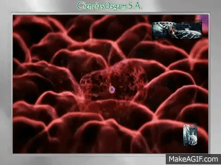

Motivaciones
La nanotecnología es un campo que se enfoca en el estudio,diseño,creación y aplicación de materiales y estructuras a escala nanométrica (entre 1 y 100 nanómetros). 
Es por eso que mis motivaciones para estar en esta carrera son las siguientes:
-Inovación y avances científicos: La inovación es importante ya que con esto se puede mejorar en muchos aspectos como lo podría ser la calidad y tiempo de vida de las personas,resolución de varios problemas cotidianos que se presentan,crecimiento económico,etc. Avanzar científicamente implica avanzar en varias áreas, dentro de estas están la física, la biología, la química, la biotecnología, investigaciones medicas, entre muchas otras.
-Eficiencia y productividad: La creación y desarrolo de materiales más eficientes para la aplicación en la industria comercial.
-Avances médicos: El desarrolo de nuevos tratamientos y la creación de elementos para la obtención de diagnósticos más precisos y no invasivos para el ser humano.
-Sostenibilidad ambiental: La reducción del impacto ambiental mediante la creación de nuevos materiales y procesos más respetuosos para el medio ambiente.
-Seguridad y protección: Ayudar para la detección y prevención de amenazas químicas o biológicas.
Intereses
La nanotecnología se me hace interesante en muchos aspectos y hay áreas que me interesan mucho más que otras como lo pueden ser:
-Los avances médicos
-La química
-Las párticulas
-Los materiales
-Áreas de oportunidad

¿Qué me llevó a elegir esta carrera?
Lo que me llevó a elegir esta carrera fue el campo de oportunidad y todo lo que implica como por ejemplo la química, la física, la experimentación, los avances en la medicina y lo que se puede lograr a través de la nanotecnología como los nanobots o sustancias que los contengan